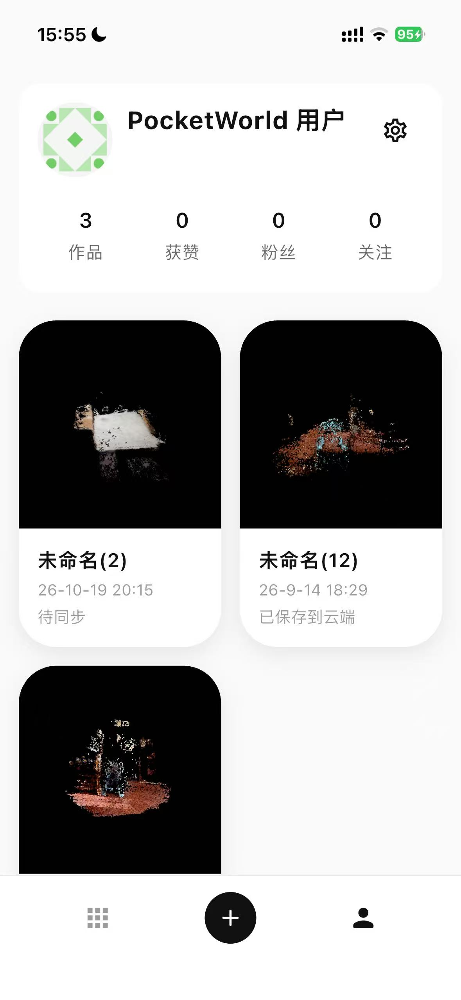
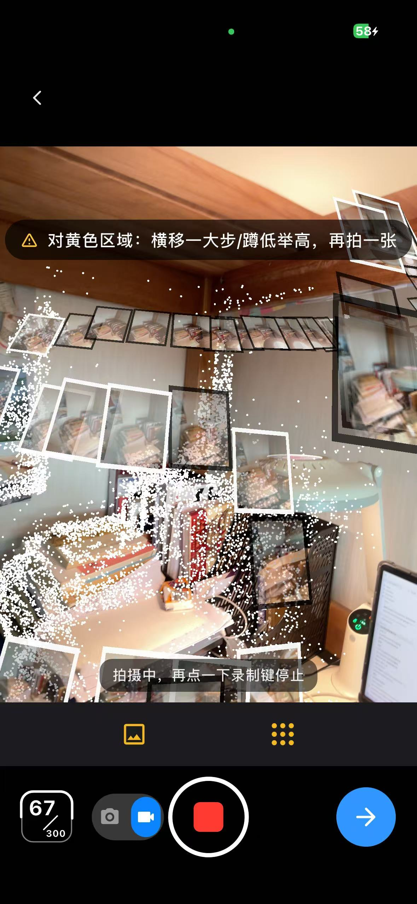
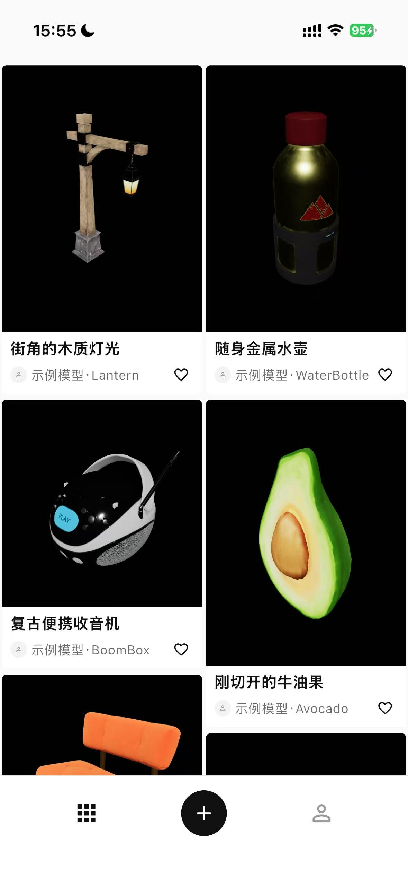

旋转查看 3D ↗
旋转查看 3D ↗
拖动旋转，滚动缩放 · 窗后城三维浏览
彩瓷花瓶
清代乾隆时期瓷器，彩色珐琅装饰与器物曲面。
用窗后城，记录空间，探索三维作品。
iOS 应用 · 开发中
CHUANG HOU CHENG
「窗后城」是一款正在研发的 iOS 应用，围绕空间记录、三维内容生成与作品体验展开。我们关注的不只是一个画面，也包括画面中的空间关系，以及之后再次观看与探索的方式。
我们从移动端出发，持续打磨记录与查看空间内容的体验，让三维内容更贴近日常使用。
Chuang Hou Cheng is an iOS application under development. We explore mobile spatial capture and new ways to create and experience three-dimensional content.
产品仍在研发中，尚未在本网站提供公开下载。正式发布及体验信息将通过官网更新。
开发中版本 · 实机界面

查看个人资料与作品记录。

记录身边场景，跟随提示采集。

浏览三维作品，发现不同视角。
拍下身边的场景，
再从不同角度回看。
从底部的「＋」进入拍摄页面，围绕想记录的物体或场景移动，按照画面提示补充不同角度。
结束采集后，继续完成三维重建。生成结果会受到光线、拍摄角度、场景和设备状态的影响。
在个人页面找到自己的作品记录，打开作品，从不同角度查看记录下来的空间细节。
切换到社区页面，浏览三维作品。个人作品记录与社区内容分别呈现，你也可以先从社区开始探索。
以上展示当前开发版本的主要使用方式。产品仍在研发中，正式发布信息将通过官网更新。
转动一件器物，
看见照片之外的空间。
从器物的曲面到雕塑的轮廓，转动视角、放大细节，探索三维作品里的每一面。
旋转查看 3D ↗拖动旋转，滚动缩放 · 窗后城三维浏览
清代乾隆时期瓷器，彩色珐琅装饰与器物曲面。
 旋转查看 3D ↗
旋转查看 3D ↗拖动旋转，滚动缩放 · 窗后城三维浏览
十八世纪朝鲜王朝瓷器，蓝色龙纹环绕白色釉面。
 旋转查看 3D ↗
旋转查看 3D ↗拖动旋转，滚动缩放 · 窗后城三维浏览
十一世纪南印度青铜雕塑，火焰环与多臂造型细节。
开放授权示例素材，用于展示三维作品浏览体验。
让采集、内容与体验彼此衔接，
是我们持续探索的方向。
探索通过移动设备记录身边空间的方式，关注真实环境中的观察、取景和采集体验。
SPATIAL CAPTURE围绕空间内容的生成与表达开展研发，探索从图像记录到可观察三维内容的过程。
THREE-DIMENSIONAL CONTENT关注三维作品在手机上的呈现与查看，让用户能够从不同角度重新认识记录下来的空间。
SPATIAL EXPERIENCES产品咨询与体验反馈，可以从这里联系我们。
kaidong@kongye.space开发版本文件 · 草稿预览，尚未正式生效
提供这些信息能帮助我们更准确地定位问题。邮箱用于产品咨询与反馈，不直接在官网收集拍摄素材。
目前产品处于开发阶段，本站尚未提供公开下载。正式发布与体验信息会在官网更新，也可以通过公司邮箱咨询。
作品效果与光线、场景纹理、遮挡和拍摄角度等因素有关。拍摄时可根据画面提示补充角度，尽量保持场景稳定。如遇持续异常，请通过邮件说明设备与操作情况。
请通过公司邮箱 kaidong@kongye.space 联系我们，说明需要咨询或处理的事项。
「窗后城」由北京空也科技有限公司研发。公司英文名称为 Beijing Kongye Technology Co., Ltd。
产品咨询、体验反馈与业务合作
Product enquiries, feedback & business collaboration.
北京空也科技有限公司
Beijing Kongye Technology Co., Ltd
空也科技是一家位于中国北京的科技公司，当前以「窗后城」iOS 应用研发为主要产品工作，关注移动设备、空间记录与三维内容之间的连接。
我们希望让数字空间的记录与体验逐渐融入日常，从熟悉的场景出发，寻找更自然的内容表达方式。本网站是公司的官方信息与联系渠道。